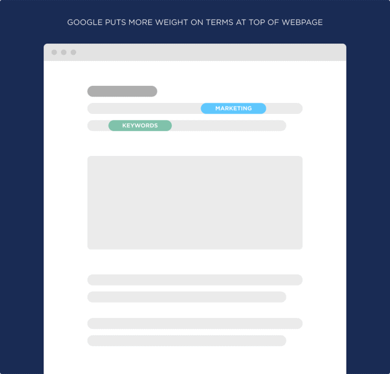
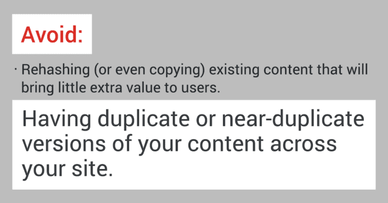
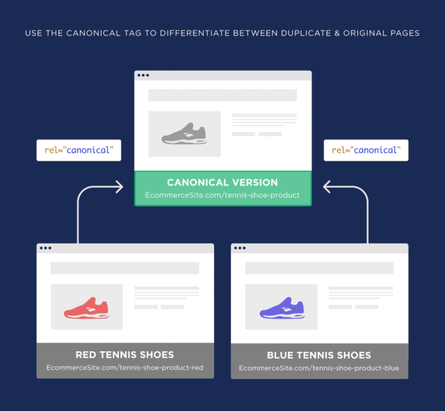
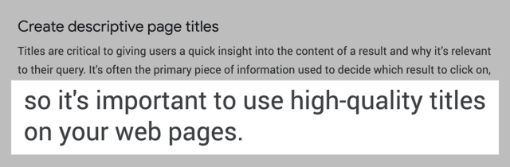
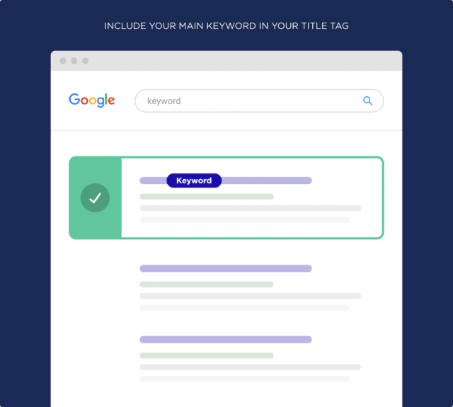
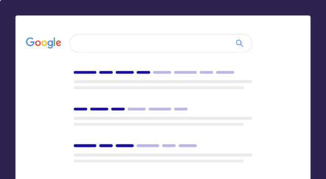
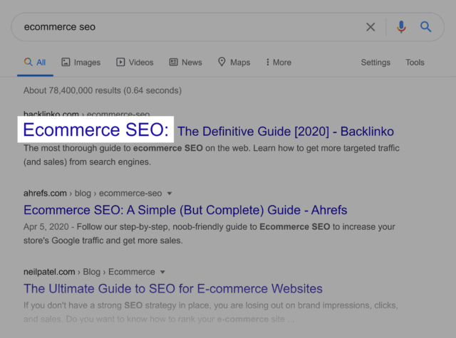

SEO best practices are a set of tasks designed to help improve a website’s search engine rankings. Common search engine optimization best practices include on-site optimization researching keywords, and building backlinks to a site.
Put another way:
There are a million things you can do to get higher Google rankings
(including advanced SEO strategies and techniques).
But it’s important to get the basics down first.
In other words: you want to make sure that your site follows current
SEO best practices. That’s the foundation.
Then, once you get your foundation in place, dive into new and
advanced approaches.
With that, here are some important SEO best practices you need to know
in 2022:
1.Add Your Main Keyword Early On In Your Content
-
It’s no secret that you want to use your keyword a handful of times
on your page.
But you may not know that the location of your keyword also makes a difference.
Specifically, you want to mention your main keyword at least once at the top of your page.
Why does this matter?
Google puts more weight on terms that appear at the top of a webpage.

2. Write Unique Titles, Descriptions and Content
-
Avoiding duplicate content is one of the most important SEO best
practices to keep in mind.
In fact, Google has stated that you should avoid “duplicate or near-duplicate versions of your content across your site.”
 And this rule applies to every piece of content on your website, including:
- Title tags
- Meta description tags
- Ecommerce product pages
- Landing pages
- Image alt text
- Category pages
Basically: if you publish a page on your site, the content on that page has to be 100% unique.

If you run a small blog with a homepage and a bunch of blog posts, this rule is pretty easy to follow.
But if you’re an eCommerce site owner with thousands of products, writing unique content for each page can be tricky.
Tricky… but worth it.
If you’re having trouble writing content for each page, consider combining pages that have similar content together. Or use the canonical tag. 3. Optimize Your Title Tag for SEO
-
When it comes to on-page SEO, your title tag is KEY.
Google has even said that: “it’s important to use high-quality titles on your web pages.”.
 Here’s how to get the most out of your page’s title tag:
Front-load Your Main Keyword: “Front-load” simply means that you start your title tag with your target keyword.
Why is this important?
Well, search engines pay close attention to the terms that you use in your title tag. This is why you want your keyword in your page title.
 But what you may not know is that Google also puts more emphasis on words and phrases that show up early in your title tag.
 So if it makes sense, start your title off with the keyword that you want to rank for.
For example, I currently rank #1 for the super competitive term “eCommerce SEO”.
And my title tag starts off with that exact phrase.
 So if it makes sense, start your title off with the keyword that you want to rank for.
For example, I currently rank #1 for the super competitive term “eCommerce SEO”.
And my title tag starts off with that exact phrase.
Sometimes it’s not possible to use your keyword that early on because it will make your title tag look weird. Yes, search engine optimization is important. But your title tags need to be useful for users too.
(More on that later)
If you’re not able to start your title tag off with a keyword, no biggie. Just include your keyword as early on as you can.
For example, this page is optimized around the keyword “SEO strategy”.
I couldn’t figure out a way to include the keyword “SEO strategy” really early in my title. So I just used my keyword as early as I could.
It’s not right in the beginning. But it’s early enough so that Google can see that my page is clearly about “SEO strategy”.
Use One Keyword Per Title: Google has been really clear on this.
They don’t want you to stuff your title with a bunch of different keywords.
(Also known as “keyword stuffing”)
Instead, you want to use one main keyword in your title. And if your page is high-quality, you’ll naturally rank for that keyword… and lots of others.
For example, this page on my site is optimized around the term: “keyword research”.
And, as you can see, I use that term in my title tag.
The other words and phrases in my title are just to highlight what my page is actually about.
And because my page contains high-quality content, it ranks in the top 5 for my main keyword.
And, according to SEMRush, this page also ranks for 630 different keywords.
Did I optimize my page around 630 keywords? Nope!
Instead, I optimized my page (and title) around ONE important keyword. And Google largely took care of the rest.
Write Compelling, Shareable Titles: Your title tags should make people want to click on your page to learn more.
Why?
When lots of people click on your result in Google, you can find yourself with higher rankings for that term.
This is why, once my SEO stuff is taken care of, I then start optimizing my title for clicks and shares.
In other words:
I try to write title tags that are interesting, compelling and push people to share.
For example, this list of content marketing tools has an eye-catching title.
4. Optimize Your Site’s Loading Speed
-
Google usually doesn’t talk publicly about the ranking factors in
their algorithm.
So when they talk a lot about a specific ranking signal, you KNOW it’s a big deal.
Site loading speed is one of those rare ranking factors.
This is why I highly recommend making your site load as quickly as possible.
(Especially on mobile devices.)
Your first step is to benchmark your site’s current loading speed. That way, you know where you’re at before you start making changes.
I recommend the super-helpful PageSpeed Insights tool.
After all, the recommendations you get from this tool come from Google themselves.
Plus, it doesn’t just tell you if your page is fast or slow. The tool gives you a detailed report that includes ways you can improve.
If you want to dig deeper with page speed stuff, check out Web Page Test.
It’s a free tool that tends to give a more accurate feel of how your site loads to actual users.
Either way, here are a few ways you can improve your site’s loading speed.
- Compress Images: This is a big one. Images tend to make up the bulk of a page’s size (in terms of KB). Which is why I recommend using a tool like Kraken.io to shrink your image sizes.
- Use Lightweight Themes: Bulky WordPress themes can slow things down. So if your theme isn’t optimized for speed, consider switching to one that is.
- Use Lazy Loading: Lazy loading images can boost your site’s loading speed by 50% or more. The downside is that images show up as users scroll down the page, which isn’t great for UX. So it’s a tradeoff.
- Use a CDN: CDNs serve images and other media on your site on servers that are close to your users.